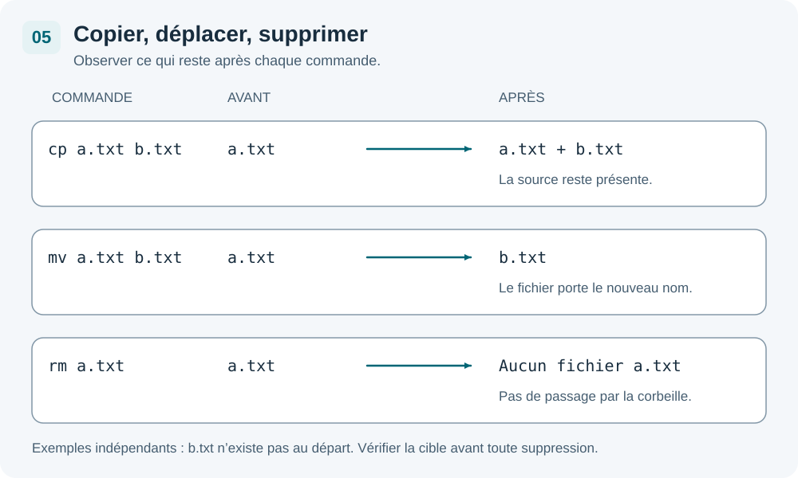

Créer fichiers et dossiers
Sous Linux, tout est fichier : les documents, les programmes, mais aussi les périphériques et les paramètres système.
Les dossiers sont comme des tiroirs étiquetés dans un classeur : ils permettent d'organiser les fichiers et de retrouver facilement ce qu'on cherche.
mkdir — Créer un dossier
mkdir projets # crée le dossier "projets" mkdir projets/linux # crée "linux" dans "projets" mkdir -p projets/linux/cours # crée toute la hiérarchie d'un coup
L'option -p (parents) crée tous les dossiers intermédiaires si ils n'existent pas encore. Sans -p, mkdir échoue si le dossier parent n'existe pas.
touch — Créer un fichier vide
touch notes.txt # crée un fichier vide (ou met à jour sa date) touch a.txt b.txt c.txt # crée plusieurs fichiers d'un coup
echo et redirection — Écrire dans un fichier
echo "Bonjour" > notes.txt # écrit dans le fichier (écrase le contenu) echo "Ligne 2" >> notes.txt # ajoute à la fin sans écraser cat notes.txt # vérifie le contenu
| Opérateur | Effet |
|---|---|
| > | Redirige la sortie vers un fichier — écrase si le fichier existe |
| >> | Redirige la sortie — ajoute à la fin sans écraser |
cp — Copier
cp notes.txt notes-sauvegarde.txt # copie et renomme cp notes.txt /tmp/ # copie dans /tmp cp -r projets/ /tmp/ # copie un dossier entier (-r récursif)
Sans -r (récursif), cp ne peut pas copier un dossier — il retourne une erreur. Pensez toujours à -r pour les dossiers.
mv — Déplacer ET renommer
mv notes.txt documents/ # déplace dans le dossier "documents" mv notes.txt rapport.txt # renomme (même dossier) mv projets/ /home/work/ # déplace un dossier entier
mv fait à la fois déplacer et renommer. Si la destination est un dossier existant, le fichier est déplacé dedans. Sinon, il est renommé.
Récapitulatif cp vs mv

| Commande | Résultat | Fichier source |
|---|---|---|
| cp a.txt b.txt | a.txt copié en b.txt | a.txt reste intact |
| mv a.txt b.txt | a.txt renommé en b.txt | a.txt disparaît |
| cp -r dir/ dest/ | dir/ copié dans dest/ | dir/ reste intact |
| mv dir/ dest/ | dir/ déplacé dans dest/ | dir/ disparaît de l'emplacement original |
rm — Supprimer
rm notes.txt # supprime un fichier rm a.txt b.txt c.txt # supprime plusieurs fichiers rmdir projets/ # supprime un dossier vide rm -r projets/ # supprime un dossier et tout son contenu
Il n'y a pas de corbeille sous Linux. Une fois supprimé avec rm, un fichier est irrécupérable. Vérifiez toujours ce que vous tapez avant d'appuyer sur Entrée.
La commande rm -rf / peut détruire l'intégralité du système. Ne jamais l'exécuter.
Wildcards — Jokers
Les jokers permettent de cibler plusieurs fichiers en une seule commande.
| Joker | Signification | Exemple | Correspond à |
|---|---|---|---|
| * | N'importe quelle suite de caractères | *.txt | notes.txt, rapport.txt… |
| ? | Un seul caractère quelconque | fichier?.txt | fichier1.txt, fichierA.txt… |
| [abc] | Un caractère parmi la liste | fichier[123].txt | fichier1.txt, fichier2.txt, fichier3.txt |
Exemples pratiques
ls *.txt # lister tous les fichiers .txt rm rapport_*.txt # supprimer tous les rapports cp *.conf /tmp/ # copier tous les fichiers de config dans /tmp ls fichier?.txt # lister fichier1.txt, fichierA.txt...
find — Rechercher des fichiers
La commande find parcourt une arborescence pour trouver des fichiers selon différents critères.
find /home -name "notes.txt" # recherche par nom exact find /home -name "*.txt" # tous les fichiers .txt dans /home find /etc -name "*.conf" -type f # fichiers .conf uniquement (pas les dossiers) find /tmp -mtime -1 # modifiés dans les dernières 24 heures
| Option | Signification | Exemple |
|---|---|---|
| -name | Nom du fichier (sensible à la casse) | -name "*.log" |
| -iname | Nom (insensible à la casse) | -iname "*.TXT" |
| -type f | Fichiers uniquement | |
| -type d | Dossiers uniquement | |
| -mtime -N | Modifié il y a moins de N jours | -mtime -7 |
| -size +N | Plus grand que N (k=Ko, M=Mo) | -size +100k |
Pour rechercher dans tout le système, utilisez find / ... mais attendez-vous à voir des messages d'erreur pour les dossiers non accessibles. Ajoutez 2>/dev/null pour les masquer.
nano — L'éditeur de texte en terminal
nano est l'éditeur le plus accessible pour les débutants. Ses raccourcis sont affichés en bas de l'écran.
nano notes.txt # ouvre notes.txt (le crée s'il n'existe pas)
Une fois dans nano :
| Raccourci | Action |
|---|---|
| Ctrl + O | Sauvegarder (Write Out) — confirme avec Entrée |
| Ctrl + X | Quitter (propose de sauvegarder si modifié) |
| Ctrl + K | Couper la ligne courante |
| Ctrl + U | Coller la ligne coupée |
| Ctrl + W | Rechercher un mot dans le fichier |
Cartes interactives — clique pour voir l'explication
Dans nano, le symbole ^ représente la touche Ctrl. Donc ^O = Ctrl+O. Ces raccourcis sont toujours affichés en bas de l'écran dans nano.